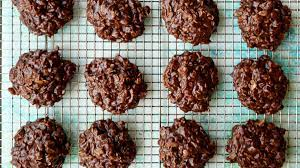

Belva Cookies

Belva Cookies - also known as No Bake Cookies or No Bake Peanut Butter Chocolate Cookies
Belva Cookies - as we call them in our family - is a recipe passed down from my paternal grandmother.
There is little difference between our recipe and those that can be found on the internet. Most differences
will be found in the temperature of the stove and duration of boiling time. This will affect
the consistency and finish of the cookies.
A variation that I have not seen online, but I will sometimes do for friends with peanut allergies,
is to substitute peanut butter with marshmallow creme.
You will need the following ingredients:
- 1 stick (8 tablespoons) of butter
- 1/2 cup of milk
- 4 tablespoons of cocoa powder
- 2 cups of sugar
- 1 teaspoon of vanilla extract
- 1/4 cup of peanut butter
- 2 1/2 cups of quick Quaker Oats
Cooking instructions are as follows:
- Combine the first four ingredients then heat on stove over medium heat.
- Bring to a boil and allow to boil for 2 minutes
- Remove from heat and immediately stir in remaining ingredients
- Spoon out portions onto a non-stick surface (I use wax paper) and allow to cool
- Enjoy!